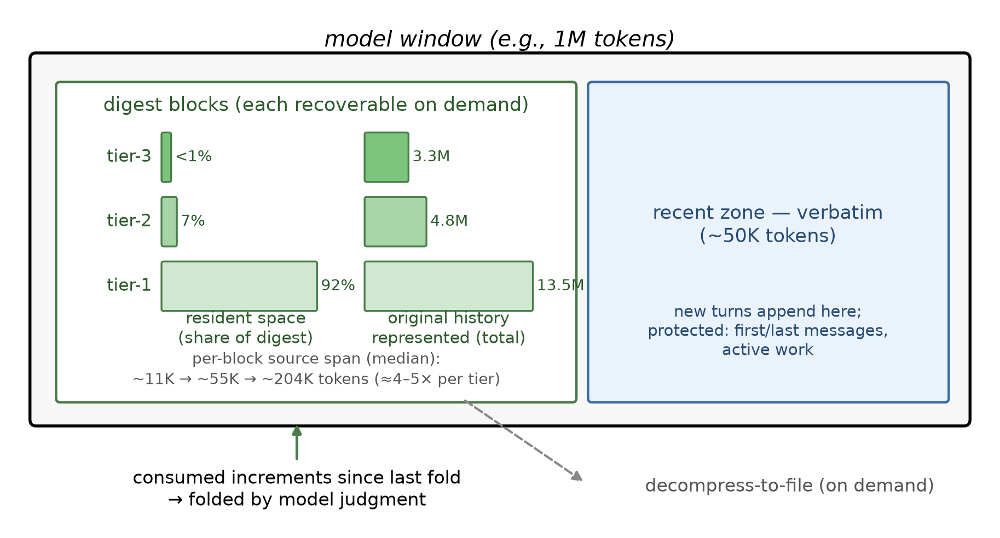
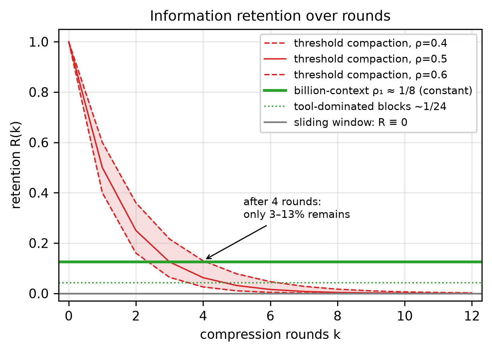
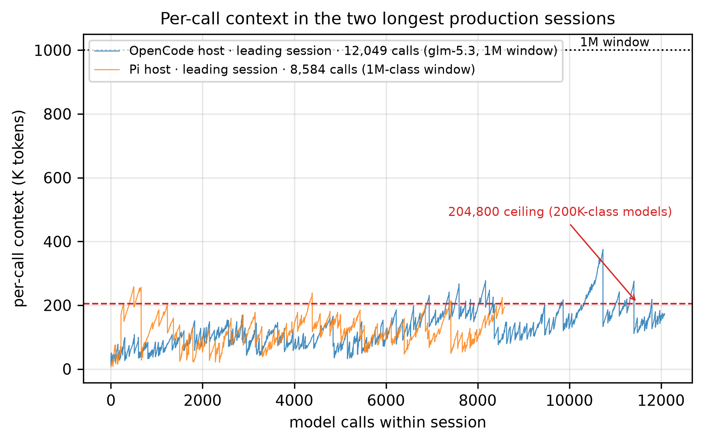
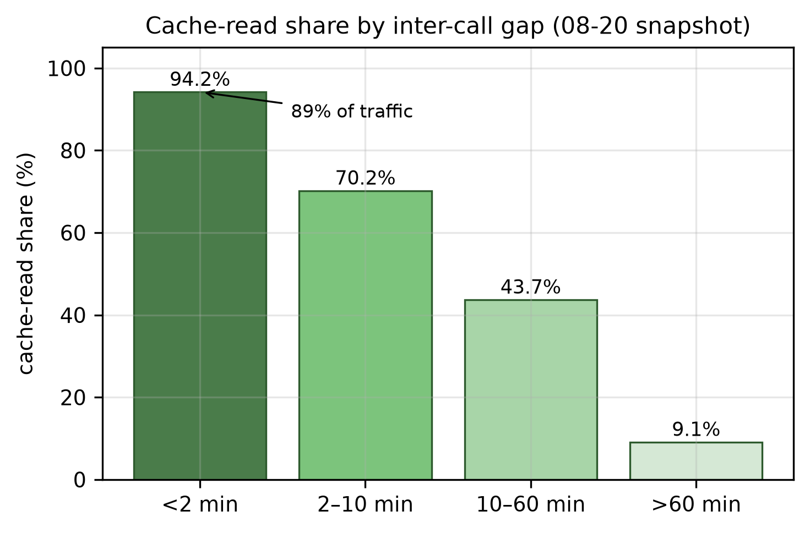
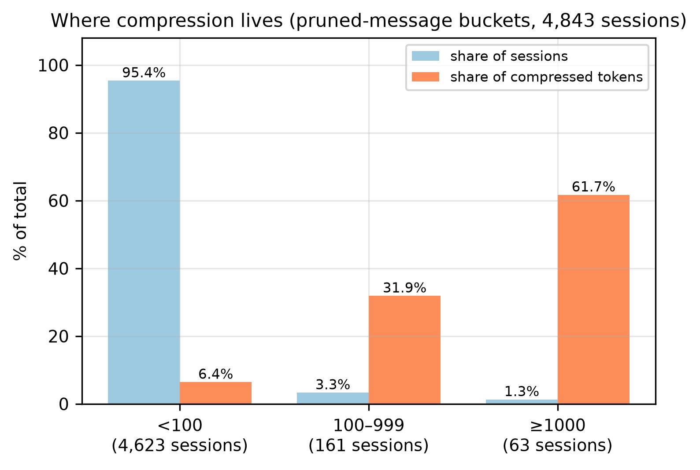
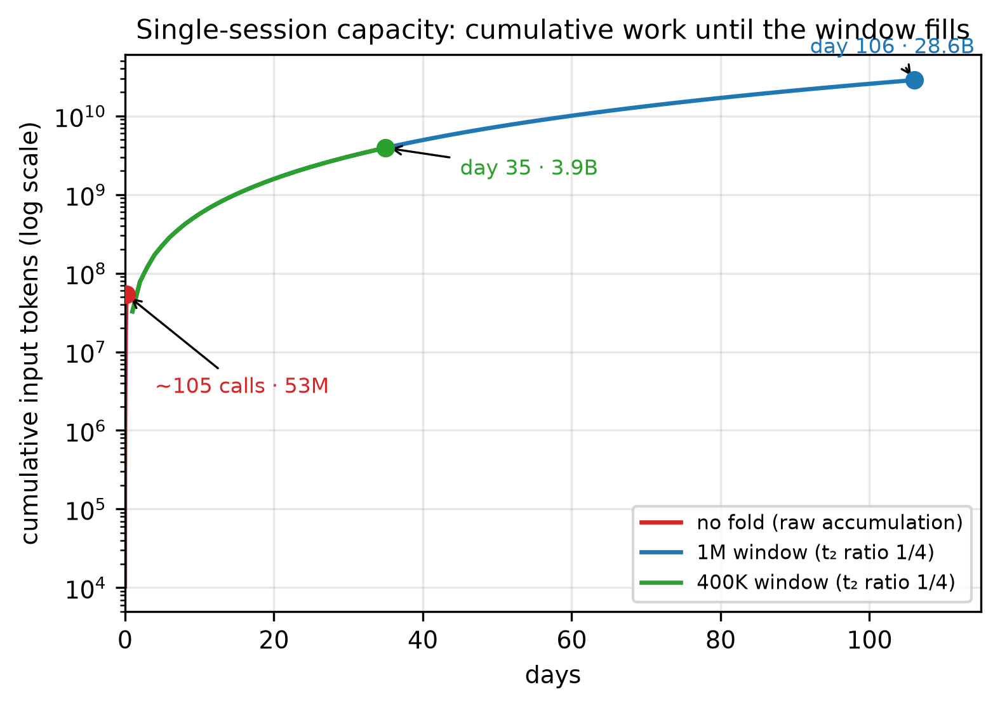

Model-Driven Incremental Hierarchical Compression: Training-Free Multi-Generational Context Management for Long-Lived Coding Agents
Preprint v0.2 — 2026-09-07. Evidence markers: [V] = verified against logged data (production logs; pilot/experiment logs marked separately where applicable); [A] = analytical/simulated; [P] = planned experiment (remaining RQs). Author: Xianglei Ran <ranxianglei@gmail.com>.
License & editing: This paper is open-sourced under the MIT License as part of the codebase. It is a living document — anyone may edit it, and improvements are welcome via pull request.
Editor's note: at the authors' request, the system is uniformly renamed billion-context (BC) throughout; the kernel repository name
acp-kernel(Active Context Pruning) is retained for historical reasons and is unrelated to Zed's Agent Client Protocol or the Linux Foundation's Agent Communication Protocol — a footnote in the paper clarifies this.
Abstract
Long-lived coding agents exhaust their context window: tool outputs accumulate until the harness truncates history or compacts it into a one-shot lossy summary — after which the agent can never recall what was dropped. This paper demonstrates that a bounded context of 200K tokens is enough — without enlarging the window, adding accelerator memory, or stacking retrieval infrastructure, it supports high-quality, months-long tasks and ten-thousand-call sessions, processing billions of cumulative input tokens. The evidence comes from four and a half months of daily production use across three hosts: on models with a 204,800-token context window, session context never exceeded the window limit; marathon sessions ran for months on an unchanged ~1M-token window. The system that makes this possible is billion-context (BC), a training-free context-management system. Unlike the conventional approach — once context reaches a threshold, summarize the entire history into one opaque blob and discard the source (irreversible) — BC lets the model itself actively decide what to compress, when, and how much, based on whether the current task still needs that content; compressed content is not discarded but distilled into summary blocks placed at the head of the session, each block individually restorable; the recent working area (~50K tokens) stays raw. We call this layout the fold. From it follow three economics. (1) The fold brings long sessions and quality: the fold keeps total context oscillating within a bounded band rather than growing without bound — each compression merely replaces one mid-history range with a compact summary (output median only 185 tokens, 97.5% no more than 2K), and only compresses what was added since the last compression. In production, heavy-load sessions whose mean history is ~900K tokens (median ~530K) end up leaving only ~13K tokens of summaries (a standing macro-fold of roughly 70×), sessions can run continuously for months, and every summary block remains individually restorable at all times. Quality does not degrade either, for two reasons: first, what gets compressed is only content the task has already consumed — the increment accumulated since the last compression (growth-gate trigger floor ~50K, effective floor ~22.5K), dominated by high-volume, low-density tool outputs; the measured per-compression fold median is 2.6K (§6.2) — rather than content in active use; second, at the moment of compression the system injects a controlled prompt giving the model a precise recommendation list of candidate ranges to compress (with real sizes) plus compression guidance, and removes that injection immediately after compression completes, leaving no trace in the context. The result: with recall-probe scores flat, re-read (re-fetching already-compressed content) calls drop 63% (2.7×). (2) Low context brings resource savings: because history is append-only and compression deactivates only suffix ranges, the KV-cache prefix is never invalidated by compression: at active tempo (inter-call gaps <2 minutes, 89% of traffic), the measured cache-read share reaches 94.2%; the blended values of 88.3–90.7% on the two cache-equipped hosts are lower because of provider-side cache expiry during idle periods, not because of the layout — miss attribution analysis shows only 16% of missed tokens come from newly appended suffixes. On self-hosted serving stacks, bounded context also shrinks resident KV-cache memory proportionally; rewrite-style compaction instead invalidates the entire prefix on every pass and requires the whole window to reside in memory. (3) Low context improves model attention: frontier-model attention is most reliable in the sub-200K-token regime and degrades at the tail of long contexts; the fold keeps total context in the former rather than pushing it toward the latter.
How big can a single session get? Taking a 1M-token window as an example, it theoretically supports up to ~28.6B tokens of sustainable work lasting 106 days (cumulative-input accounting, including cache re-reads) [A: simulation fitted to this corpus; ~19× beyond the largest observed session; tier ratios fitted to 57 observed tier-2 events (volume-weighted)]. How is this achieved? Thanks to the context distillation system: summary blocks themselves serve as raw context, recursively entering the compression flow and being folded into tier-2; tier-2 can be folded again into tier-3, forming the pagoda effect — each tier is much smaller than the one below it, so summary-mass growth decays tier by tier, enabling enormous cumulative context input to be handled; a closed-form derivation plus discrete-event simulation of this layout (per-tier retention rates calibrated from production compression data) yields the upper bound above. Without the fold, the same session would slam into the window after ~104 calls (~53M cumulative-input tokens, less than a day). Compared with traditional threshold-triggered one-shot lossy compaction, the key difference lies in how information retention rate behaves over rounds: the traditional scheme re-summarizes ~80% of the window's history into a 30–50%-of-window summary every round, early content is re-summarized once per round, decaying geometrically as ρ^k (ρ≈0.4–0.6, only 3–13% left after four rounds) toward zero; our fold compresses only consumed increments each round, tier-1 blocks retain ~1/8 on median (tool-dominated blocks ~1/24), and each piece of content is folded exactly once in its lifetime and then remains resident unchanged — the retention rate stops at ~1/8 and does not compound-decay with rounds (in production, tier-2 re-distillation touched only 60 of 1,711 blocks) [A]. It thus reconciles long context and quality in principle. This is a modeled single-session ceiling, statistically distinct from the measured multi-session corpus; the two are not comparable side by side. We report what we believe is the first multi-month, multi-host longitudinal deployment study of in-conversation context compression (a parallel interface-layer system reports three months of production use): over four and a half months of daily production use, 4,843 sessions deployed the fold (917 of them with usage records retained), and 174,327 model calls processed 18.76B cumulative input tokens (1.75B fresh + 17.01B cache reads); across the three hosts the total is ≈24.7B — which is precisely the origin of the name billion-context. On models with a 204,800-token window, context never overflowed; marathon sessions reached 8,584–12,049 calls (~1–1.5B cumulative tokens, 1M-class windows) at ~120K average context; on the Pi host (OpenCode-side statistics are inflated by large static AGENTS.md and host-prompt bulk, while Pi-side measurements are unaffected by this), measured per-call context: mean 88K, median 72K, p99 218K. In production, 229M tokens were compressed in total, 62% of them concentrated in sessions with more than a thousand messages, which account for only 1.3% of all sessions — context management is a "marathon phenomenon" that short-session benchmarks cannot observe. Controlled experiments (against an effectively-untruncated sliding-window retention baseline; the 80%-threshold arm never fired at this pilot scale and degenerated into sliding) show: BC configurations cut billed tokens by 31–54% (per the main-table caliber), probe scores flat, zero measurable recall loss under default tuning (aggressive tuning trades recall for cost on phase-structured workloads). The 2.7× re-fetch reduction is attributed to the doctrine+layout bundle as a whole: even a quiescent control that executes no compression at all reproduces almost the entire reduction from doctrine text plus message tags alone (re-fetch −62% vs the −63% headline); the deterministic arm driven by the engine at fixed cadence also shows 18 re-fetches. That deterministic arm is even 37% cheaper than default BC on repetitive workloads, but on phase-structured workloads the advantage reverses and the default configuration wins across the board — at the cost of higher variance across random seeds, summaries unaware of the current task, and no fold mechanism. We also publish the compression doctrine and two extension directions: an extreme-compaction regime targeting ~50K total context, and a path to distill the doctrine into weights for further savings.
1. Introduction
The decisive constraint of agentic software engineering [2405.15793][2310.06770] is not model capability but context lifetime. An agent editing code for weeks accumulates tool outputs, diagnostics, and decisions at thousands of tokens per turn. Every mainstream remedy is a variant of "forgetting" or "externalizing":
- Sliding-window truncation discards the oldest turns outright (the de facto window policy of attention-sink streaming [2309.17453]), and positional degradation erodes even what survives [2307.03172].
- Threshold auto-compaction (the factory setting of commercial coding CLIs[^claudecode]) summarizes the entire history into one opaque blob near the window limit and discards the source — irreversible, single-granularity, and timed by a threshold blind to the task's actual needs.
- External memory (vector/graph stores) extracts "facts" but discards procedural context — the traceback that explained why a fix worked, the constraint the user stated 300 turns ago.
Recent research agrees on the direction — the agent should manage its own context — but its dominant line converges mechanistically on training: AgentFold [2510.24699] fine-tunes a 30B model around a fold operator; Context-ReAct [2605.05191] distills five atomic context operators from 10K synthetic trajectories; ACM [2607.23809] post-trains editing tools over external memory. This prices "self-management" at a custom checkpoint per agent framework and freezes the policy at training time.
We start from a different premise: the judgment required for compression already exists inside frontier models; what is missing is scaffolding that makes that judgment executable and safe to deploy. billion-context[^name] provides that scaffolding as "one library + one doctrine":
- A kernel, not a harness (§3). A host-agnostic TypeScript kernel implements the full block lifecycle — reference assignment, synchronization, tiered distillation, pruning, filtering, nudging, emergency truncation — organized as a 9-stage per-turn pipeline. Hosts (the system adapts to mainstream agents: one shared kernel + a universal proxy
billion-contextcovering the three mainstream model-API wire protocols in proxy mode, so any agent that can set a base URL connects with zero adapter code; downstream bili-series integrations are ~9k lines per host, e.g., Pi and OpenCode). The same kernel serves GLM-5.1/5.2/5.3, Qwen, and GPT-class models without retraining [V: run-level]. - A doctrine, not a checkpoint (§4). We codify compression judgment as an executable prompt specification: two failure modes (over-compression and under-compression), a single criterion ("Is this content still needed by the current task step?"), protected zones, and KEEP/DROP/priority rules for summaries. The doctrine is inspectable, versioned, and — as argued in §9 — directly usable as a curriculum for distillation into weights.
- Multi-generational reversibility (§3.2). Compression produces blocks; blocks themselves get compressed again (tier-2), and again (tier-3), each generation retaining references to its sources. The result is "an LSM tree over summaries": write-amplification-style tiering applied to context, supporting per-block decompression, and a to-file decompression mode that restores full fidelity without disturbing the cached prefix.
This layout yields the three economics, which are also the organizing skeleton of this paper's evidence (§6).(1) The fold brings long sessions and quality: the fold keeps total context oscillating within a bounded band rather than growing without bound — each compression merely replaces one mid-history range with a compact summary (output median only 185 tokens, 97.5% no more than 2K), and only compresses what was added since the last compression. In production, heavy-load sessions whose mean history is ~900K tokens (median ~530K) end up leaving only ~13K tokens of summaries (a standing macro-fold of roughly 70×), sessions can run continuously for months, and every summary block remains individually restorable at all times. Quality does not degrade either, for two reasons: first, what gets compressed is only content the task has already consumed — the increment accumulated since the last compression (growth-gate trigger floor ~50K, effective floor ~22.5K), dominated by high-volume, low-density tool outputs; the measured per-compression fold median is 2.6K (§6.2) — rather than content in active use; second, at the moment of compression the system injects a controlled prompt giving the model a precise recommendation list of candidate ranges to compress (with real sizes) plus compression guidance, and removes that injection immediately after compression completes, leaving no trace in the context. The result: with recall-probe scores flat, re-read (re-fetching already-compressed content) calls drop 63% (2.7×). (2) Low context brings resource savings: because history is append-only and compression deactivates only suffix ranges, the KV-cache prefix is never invalidated by compression: at active tempo (inter-call gaps <2 minutes, 89% of traffic), the measured cache-read share reaches 94.2%; the blended values of 88.3–90.7% on the two cache-equipped hosts are lower because of provider-side cache expiry during idle periods, not because of the layout — miss attribution analysis shows only 16% of missed tokens come from newly appended suffixes. On self-hosted serving stacks, bounded context also shrinks resident KV-cache memory proportionally; rewrite-style compaction instead invalidates the entire prefix on every pass and requires the whole window to reside in memory. (3) Low context improves model attention: frontier-model attention is most reliable in the sub-200K-token regime and degrades at the tail of long contexts; the fold keeps total context in the former rather than pushing it toward the latter. Together, these three propositions form the paper's central claim; the chapters that follow evidence them in turn: production telemetry (§6), single-session capacity modeling (§7), and controlled experiments (§8).
Contributions. The core contribution is an empirical thesis, not any particular mechanism: a bounded context of 200K tokens is enough — high-quality, months-long tasks, billions of cumulative input tokens, ten-thousand-call sessions — and, organized as a fold, it achieves this without enlarging the context window, adding accelerator memory, or stacking retrieval infrastructure. On the task mix observed in our four-and-a-half-month production deployment, this held for every session; §9 delimits the task classes (verbatim-history work) where the thesis does not apply. None of the underlying mechanisms is individually novel — paging, summarization, protected zones, and tiering all appear in prior work (§2); what is new is: proving that this operating point is reached by the fold as a specific architecture rather than by a simple stacking of existing mechanisms, measuring the economics of that operating point at production scale, and arguing that the same hardware extends to 28.6B tokens of single-session work:
- C1 (Sufficiency, demonstrated empirically on the observed populations). On production traffic, a ≤200K window was never the binding constraint: four and a half months on the main host (plus nearly six weeks on Pi, 12.2 days on ework), zero violations on 204,800-token models; on the clean Pi host, per-call context mean 88K / median 72K — about 35% of the 204,800-class ceiling (large-window sessions run hotter by design, §6.1) — and marathon sessions on 1M-class windows (8,584–12,049 calls, ~1–1.5B cumulative) completed real work at ~120K average context. In controlled experiments, recall probes tie the effectively-untruncated retention baseline while re-fetch calls drop 2.7× — an effect of the doctrine+layout bundle (§8.1): we read "the tasks did not need a bigger window, they needed the right layout" as the hypothesis the bundle confirms, not a per-mechanism attribution.
- C2 (Long-horizon capability independent of resources). The fold turns window size from a hard limit into a bounded band: sessions run for months on unchanged hardware and window — no longer context, no extra KV-cache memory (which instead shrinks proportionally), no retrieval service — and a calibrated tier-capacity analysis extrapolates the same resources to 28.6B tokens / 106 days of single-session work [A: simulation, fitted; ~19× extrapolation].
- C3 (The enabling composition). The thesis holds because of the fold machinery — the layout invariant (distilled prefix, raw recent zone, first/last-message protection), the doctrine as a versioned prompt specification with six interaction mechanics, deactivate-with-lineage compression, growth-gated increment-only triggering. Each component appears in prior work; the contribution is the specific architectural composition of the fold, and the interaction mechanics that keep model judgment safe within it (see "What we do not claim").
- C4 (Measured three economics = verification of resource-independence). ① Long sessions and quality: per-compression output median 185 tokens (97.5% ≤2K), ~70× standing macro-fold, digests at single-digit percent of the window, tool blocks 24×/45×; compressing only consumed increments + a controlled prompt at the moment of compression (deleted immediately after) keeps quality flat — probes tie, re-fetch drops 2.7× (in the quiescent control, doctrine+tags alone reproduce almost the entire reduction (re-fetch −62% vs the −63% headline); §8.1). ② Resource savings: 94.2% cache-read share at active tempo, 16% growth-attributable misses, KV-cache memory proportional to the bounded band — against full-window residency and full-prefix misses for rewrite-style compaction. ③ Attention: total context kept in the regime where positional degradation [2307.03172] is comparatively mild (2023-era evidence; current-frontier bounds pending, §8.2).
- C5 (Evidence and artifacts). A three-host production study spanning up to four and a half months (~24.7B cumulative input across hosts; main host only: 174,327 calls, 229M tokens compressed, 17,783 blocks audited (08-20 snapshot)), a controlled pilot over four arms plus one tuning variant, a corpus analysis of what production compression actually keeps and drops, and the open-source kernel with dual-host adapters.
What we do not claim. Model-initiated (dynamic) compression is not ours — it dates to MemGPT [2310.08560] and is already standard equipment in agent-context plugins; the search/decompress tool interface is likewise prior art. Training-side compressors (family a) are orthogonal and composable. Verbatim-history task classes — audits, compliance, forensics, simultaneous multi-constraint refactors whose constraint union exceeds any digest — lie outside the support range of a lossy fold that generates no restore traffic; we do not claim coverage of them (restore works when instructed, but models at this scale will not spontaneously reach for it, §8.1). Our claim is: the empirical demonstration of the sufficiency of a bounded context for the coding-agent task mix observed in our deployment, the fold composition that achieves it, and the longitudinal evidence.
2. Background and Design Space
We organize prior work into six families (full map in our August 2026 survey: survey-2026-08.md):
(a) Training-side representation compression. AutoCompressors [2305.14788], ICAE [2307.06945], gist tokens [2304.08467], LLMLingua [2310.05736], Cartridges [2506.06266], and scaled encoder–decoder latent compressors [2606.09659] compress at the representation level and require training; they are orthogonal to us: billion-context operates on the agent's own token stream and can sit atop them. Training-free token filtering (Selective Context [2304.12102]) bounds the training-free corner of this family, but operates at token granularity without task-aware judgment.
(b) External agent memory. MemGPT [2310.08560] paginates context (itself training-free and model-initiated); Mem0 [2504.19413], A-MEM [2502.12110], Zep/Graphiti [2501.13956] extract facts into vector/graph stores, situated within cognitive-architecture framings of agent memory (CoALA [2309.02427], memory survey [2404.13501]) and memory-operating-system lines (MemOS [2507.03724], MIRIX [2507.07957]), reaching back to Generative Agents [2304.03442] and Reflexion [2303.11366]; CAM [2510.05520] incrementally clusters experience into hierarchical summaries; Agent Workflow Memory [2409.07429] distills reusable procedures from past trajectories, PRO-LONG [2607.20064] retains the complete structured interaction log for agent-driven retrieval — an extreme of the retention–compression axis, also seen in the agentic-search literature [2508.11126]. Fact-extraction pipelines answer what was said but discard much procedural context; procedure-oriented variants store procedures out-of-band rather than as restorable in-conversation lineage; billion-context keeps distillates inside the conversation, browsable and restorable.
(c) Trained self-management. AgentFold [2510.24699] (fold operator, SFT), Context-ReAct [2605.05191] (five operators, completeness proof, SFT), ACM [2607.23809] (editing tools + external memory, post-training), EvoDS [2606.03841] (RL for data-science agents). HyMem [2608.15703] layers context by function (planning vs. execution) rather than by summary generation; Paritok-4B [2608.24188] distills an extractive, intent-conditioned compressor for coding-agent trajectories (25.7% of context, 86.5% resolution on SWE-bench Lite). Closest in spirit; all require per-framework training, their retrieval paths can resurface stored content, but none provide tiered block generations, in-context per-block reversibility, or production data.
(d) Engine-managed lossless recursion. LCM [2605.04050] maintains a hierarchical summary DAG with "lossless pointers to every original message," engine-driven. It shares our "hierarchy + pointers" but replaces model judgment with engine determinism: no model-decided targets, no demand-side (growth-gated) triggering, no doctrine, no deployment study. Mechanism comparison in §3.5, experimental comparison in RQ1.
(e) Production harnesses. Commercial coding CLIs ship threshold auto-compaction out of the box (summarizer undocumented). A harness-evolution study [2607.03691] shows harness changes alone measurably shift agent quality — motivating harness-level research. OPENDEV [2603.05344] mentions adaptive compaction but offers no mechanism and no evaluation. Compaction Cliff [2608.22752] quantifies the fidelity collapse of production /compact-style summarization (under 20 production configurations, safety-rule survival 53% after one round, 10% after five); MemoryWalker [2609.00865] treats production-harness context compression as a working axiom when studying training–inference mismatch; String OS [2608.28027] reports a three-month production deployment of an interface-layer token-saving design. Beyond that report, we have seen no published longitudinal data on compaction behavior from these harness families (survey §3).
(f) Cost-of-compression evaluations. Interaction-cost analysis [2608.16370] reveals compression's hidden re-fetch cost (retrieval calls rise sharply even when task completion holds); TRACE [2608.06503] and SWC [2608.11775] document execution instability and temporal-question collapse. These shaped our metric design (interaction cost is a first-class metric of RQ1).
Positioning. We do not claim to invent agent self-management (family c), nor hierarchical lossless pointers (family d). Nor is the paper's claim a conjunction of properties — mechanically stacking a list of training-free, multi-generational, reversible, production-validated properties would not by itself reach the operating point in question (as the contributions paragraph states, it is reached by the fold as a specific architecture). What this work does is, in light of the information retention rate defined in §4.2, exclude the existing methodologies for long-lived agents: under the two-axis test of asymptotic retention (the limit of early content as session length→∞) × resident mass, the sliding window has R_∞=0 (out-of-window content is never recovered); threshold-triggered auto-compaction and one-shot rewrites re-abstract early content every round, so retention decays geometrically as ρ^k→0; external memory is irreversible at write time (facts survive, but procedural context and exact values are lost the moment they leave the window); lossless recursion (LCM) has R_∞=100%, but resident mass never decays. To our knowledge, no system in families (a)–(f) satisfies both asymptotic retention > 0 (single fold, non-compounding) and sublinear resident growth — the fold is the only combination that achieves both (C3; retention argument in §4.2). Orthogonally, KV-cache eviction methods (H2O [2306.14048], SnapKV [2404.14469]) compress inside attention and are compatible with any of the above.
3. The billion-context Kernel
3.1 Architecture
billion-context splits responsibilities along a deliberate line: the model writes summaries; the library orchestrates everything else. The kernel (acp-kernel, ~10k lines of TypeScript, zero host dependencies, 550+ tests) exposes processTurn(state, messages, config) → (state', rendered, effects). Hosts own model I/O and tool dispatch; the kernel owns all context bookkeeping. The system spans four public projects: a host-agnostic compression kernel (acp-kernel); a universal context-compression proxy (billion-context) — operating in proxy mode over the three mainstream model-API wire protocols (Anthropic, OpenAI chat, OpenAI Responses), so that any agent that can set a base URL connects with zero per-agent adapter code (launchers such as bili pi also cover ACP-native agents); an ACP-native extension (billion-context-pi, serving the Pi coding agent); and opencode-acp — an earlier standalone implementation of the same design serving the OpenCode host [V].
The per-turn pipeline proceeds in order: assign-refs (mint stable mNNNNN ids for new messages) → sync-blocks (project new content onto block boundaries) → merge-blocks (coalesce adjacent compressible ranges) → prune (enforce budget invariants) → filter (visibility rules per role/content type) → hide-compress-calls (remove compression-tool noise from the rendered view) → nudge-inject (§3.4) → emergency-truncate (last-resort hard cap) → render-refs (emit the final message list with per-message ref tags). Each stage is a pure function and independently tested; the host never mutates history directly.

Figure 1. The fold layout: model window = recoverable digest blocks (pagoda-tiered: tier-1/2/3) + verbatim recent zone (~50K); consumed increments are folded into digest blocks by model judgment, and any block can be restored on demand via decompress-to-file.
3.2 Blocks: multi-generational tiering
A CompressionBlock carries {blockId, runId, tier ∈ {1,2,3}, topic, summary, directMessageIds, effectiveMessageIds, directBlockIds, createdAt, survivedCount, generation ∈ {young, old}, active}. Tier-1 blocks summarize contiguous message ranges (typically one block per compression decision). When tier-1 mass accumulates, tier-2 compression folds blocks into new blocks whose directBlockIds point at their sources; tier-3 likewise folds tier-2. The structure is "an LSM tree over prose": young generations absorb writes, old generations hold compacted history, and compaction is incremental rather than a whole-history redo. effectiveMessageIds transitively covers every original message a block summarizes, so lineage survives arbitrary re-compression. This layer-by-layer re-distillation is what the abstract calls the context distillation system: summary blocks themselves serve as raw context, recursively entering the compression flow (tier-1 → tier-2 → tier-3), forming the pagoda effect in which each tier is much smaller than the one below it, so summary-mass growth decays tier by tier — it is the direct reason single-session capacity grows sublinearly with session length (§7).
Lifecycle. A block is either active (rendered into context) or deactivated (still retained in state). decompress re-activates a block's sources and deactivates the block; decompress-to-file writes the full source text to the filesystem instead of into context — preserving the KV prefix while letting the model read full fidelity on demand. search_context provides keyword recall over block summaries plus recent messages; acp_status reports a per-turn composition breakdown (system / tool / summaries / code / text) and compressible ranges. When a later compression consumes a block, it is retained as "consumed lineage" — batch decompression can restore the whole run.
3.3 Protected zones and filters
Not all content is compressible. Compression tool calls themselves are hard-protected (they contain the summaries); the recent zone (last ~5 messages / ~5K tokens — the kernel hard floor; in production the actual raw zone is far larger, tens of K), the last user message, and the first user message (task intent) are always visible; assistant messages skip ref-tag injection to prevent model echo. These rules live in the filter stage, not in prompts — a prompt can request compression of anything, but the kernel enforces the floor.
3.4 Demand-side triggering: the growth-gated nudge (compress only consumed increments)
Prior systems gate compression on supply-side signals: fill-ratio thresholds, fixed cadences, or trained policies that bake timing into weights. billion-context additionally triggers on demand: a nudge is injected when (i) context exceeds a floor fraction of the window (default ≈ 0.45) and (ii) context has grown by more than the gated amount since the last compression (growth-gated); there are tier-specific triggers when tier-1 mass dominates. The growth gate implements one doctrine rule — compress between task steps, not mid-step — and resets the baseline after each compression. Triggered compressions therefore target only the increment the task has already consumed (each trigger cycle covers ≥22.5K of consumed increment: gate threshold 50K, effective floor 22.5K; measured per-compression fold median 2.6K, §6.2), rather than content in active use — this is the first mechanism behind "quality does not degrade" in §6.2. In production this yields compression cadences aligned with task phase boundaries (rather than token counts) [V; distributional evidence in §6.5 — per-phase cadence alignment remains qualitative].
3.5 Contrast with LCM
LCM's engine decides recursion deterministically and keeps every original reachable; billion-context lets the model decide targets, tiers, and timing, keeps block-granularity (not per-message) summaries, and adds what LCM lacks: growth-gated demand-side triggering, LSM-style per-generation promotion, the doctrine (§4), decompress-to-file cache protection, and longitudinal deployment data (§6). Our pilot's engine-policy arm is a deliberately simplified representative of that class — fixed cadence, lossy, single-tier, no pointer hierarchy (see §8.1); a faithful lossless-recursive LCM implementation is left as future work.
3.6 Design Decision One: Why Compress Only Increments
Each round compresses only the content added since the last compression — it never rewrites the full history. This is not an implementation detail; it is load-bearing, and it is the structural root of both the three economics (§6) and the retention-rate behavior (§4.2):
- Quality: each round compresses only the consumed increment accumulated since the last compression (gate trigger floor 50K, effective floor 22.5K; measured per-compression fold median 2.6K, §6.2), dominated by high-volume, low-density tool output — so the risk of discarded detail falls on material the task has already used up, not on context still in use (mechanisms in §4.1; in production the median compressed-block output is 185 tokens and 97.5% of blocks are ≤2K, see §6.2).
- Resources: the window is append-only — new content is appended at the tail, and compression only deactivates the folded suffix range. The established KV-cache prefix therefore never invalidates; this is the structural precondition for the 94.2% cache-read share at active cadence (§6.3). Any "rewrite-history" compaction invalidates the entire prefix and requires the full window to stay resident in memory.
- Retention: each piece of content is folded exactly once in its lifetime, then resides unchanged as a summary block — retention stays at ~1/8 and does not compound with rounds; the traditional scheme re-summarizes all history every round, so early content decays geometrically toward zero as ρ^k (§4.2).
- Cost: billed tokens track work performed, not history length — per-round compression cost is proportional to the current increment, so the longer the session, the lower the unit cost (§8.1: billed tokens reduced 31–54%).
In one line: incrementality makes compression an O(increment) operation. Quality risk, cache invalidation, retention decay, and monetary cost all become functions of new work rather than history length.
3.7 Design Decision Two: Why Model-Driven
When, what, and how much to compress are decided by the model on the basis of task state — not by a fixed threshold. Traditional threshold-triggered automatic compaction has three defects at once: the model is unaware — triggering and content selection are set by the threshold, with no model participation in the decision; it cannot refuse — once triggered, compression is mandatory even if the content is still critical to the current task; it cannot choose — a single granularity, the entire history squeezed into one opaque blob. All three share one root: the decision-maker is blind to task state.
"Model-driven" in billion-context has two layers:
(a) At compression time: the model decides what to compress and how much on the basis of "does the current task still need this content", and retains the right to refuse — a refusal is a quality valve, not a failure (growth-gated nudge, §3.4).
(b) On ordinary turns: the compression doctrine is resident in the system prompt, so even when no compression prompt is injected at all, the model actively manages its context — not only keeping fold awareness (which summary blocks are in the window, that each can be recovered individually, where the recent zone is, what content must be kept), but also initiating compression on its own. This behavior is measurable in production logs: in a five-day production log window, 23 of 103 effective compressions (22%) occurred on turns where the engine deliberately injected no nudge (the growth gate then reported compressible volume below threshold or increment below floor), plus 11 spontaneous compression requests that the kernel no-op'd because nothing was compressible, across 14 sessions [V]. Compression is therefore no longer fully gate-driven: the gate is a floor guarantee, model judgment is the norm.
The controlled experiments separate "judgment content" from "compression machinery" (§8.1): the quiescent control (executes no compression at all, keeping only the doctrine text and message labels) reproduces almost the entire re-read reduction (the control's own re-fetch drop is 62% vs the 63% headline) — showing that the judgment content itself carries most of the benefit; the deterministic arm (the engine drives compression on a fixed cadence, no model judgment) is 37% cheaper than the default configuration on repetitive workloads, but the advantage reverses on task-phase-structured workloads, where the default configuration wins across the board — showing that what generalizes is task-conditioned timing and scope judgment, not compression frequency itself. Recall probes tie the uncompressed baseline under default tuning: proactivity does not trade recall for cost.
Proactivity also has a measured boundary: models at this scale do not spontaneously use recovery tools — recovery works when explicitly instructed, but the model does not think to invoke it on its own (§8.1). This is precisely the motivation for the "doctrine into weights" route in §9: internalize the "when to recover" judgment into the model's weights.
4. The Compression Doctrine
The doctrine is the conceptual core of this paper: a specification of judgment that a frontier model can execute zero-shot — raising context engineering [2507.13334] to a versioned, host-configurable artifact. It has five parts (full text in acp-kernel/DESIGN-prompts.md, rendered by src/system-prompt.ts):
- Two failure modes. Over-compression destroys details needed later (task-quality loss); under-compression floods the context (retrieval-quality loss, then overflow). Neither error dominates; the doctrine balances them rather than minimizing one.
- The single criterion. Compress if and only if the content is no longer needed by the current task step. Not "old", not "large" — needed or not. This reframes compression as a query about the task, not about the text.
- Protected content and zones. Hard-protected: the compression calls themselves. Soft-protected: the recent zone, the last user message. On top of the kernel-enforced floors, the doctrine instructs verbatim preservation of user intent, constraints, and open questions.
- Summary craft rules. KEEP-verbatim classes (file paths with line numbers; signatures and load-bearing code lines; exact error strings; decisions with rationale; exact values; goal evolution; message refs for later decompression), DROP classes (verbose logs once the result is extracted; duplicate reads; dead-end exploration with its lesson preserved; the journey to the conclusion), and a priority order for tight budgets (goal > decisions+rationale > artifacts > conclusions > lessons). Tier-2/3 distillation and tier-3 condensation progressively relax fidelity.
- Interaction mechanics. Six load-bearing mechanics make the doctrine executable rather than advisory: (i) Throttled, increment-only requests. The nudge fires on a 50K-token growth floor, but when the pending compressible mass sits below that floor, the effective requirement drops to 45% of the floor (≈22.5K at 50K via the 0.45 ratio floor) — compression is deferred until the increment is worth summarizing, balancing quality against savings rather than forcing premature small folds. (ii) No ratio disclosure. The nudge never tells the model the context fill ratio: the nudge carries the directive and the list of compressible ranges, not percentages. Told "20% used," a model anchors a 200K window on "looks healthy" and refuses to compress; withholding the ratio grounds the judgment in the task, not in a number the model cannot calibrate against its own attention. (iii) The right to refuse compression. The nudge is phrased as keeping context lean — "an efficiency nudge to compress early and keep context lean --- not an overflow warning" — not as an obligation. The model may refuse at critical junctures (mid-debugging, mid-refactor) and compress slightly later via (i); refusal is a quality valve, not a failure. (iv) Transient attention over source content. Summarization exploits the attention window dynamically: the to-be-compressed range surfaces in full during the compress call and is excised from the live context afterwards (the compress call itself is hidden once consumed) — the decision is made with complete attention over the source content, after which the source leaves the working set. (v) Recommendation lists. The nudge presents candidate ranges with their real sizes (token counts, message counts, tool/text composition) — with explicit sizes, the model can select structurally sensible ranges; without sizes (our pilot's parse-failure arm), the model compresses scattered low-value ranges. The recommendation list is the interface between kernel bookkeeping and model judgment. (vi) Unique message numbering. Every message carries a stable reference ID; range selection, block lineage, and decompression all address by ref; production behavior shows models citing IDs in range selections, and even absent compression, stable per-message anchors measurably help long-context attention (consistent with the positional-degradation finding [2307.03172] and pointer-based access in lossless hierarchies [2605.04050]).
The doctrine is versioned together with the kernel; prompt-level changes ship like code (both hosts pin exact kernel versions). Recent releases expose it as a layered, configurable surface rather than frozen text: Layer 0 opens host overrides of the four load-bearing compression rules behind an explicit acknowledgeRisk gate (customization without forking); Layer 1 provides tri-state section overrides (replace/remove/default) and tool-description customization; production feedback also iterates the wording itself — e.g., a quote-fidelity tuning round listed paraphrase as an explicit exception to verbatim KEEP and relabeled block headers as task-relative ("TASK AS OF THIS BLOCK"). This is the training-free substitute for family (c)'s SFT: the policy lives in inspectable, versioned, host-configurable text, evolves in days, not GPU-months, and transfers across models unchanged [V: GLM-5.1/5.2/5.3, Qwen, GPT-class models in production service — run-level transfer; controlled quality transfer untested].
4.1 Why quality holds
Two mechanisms jointly guarantee that the fold does not degrade quality. First, compress only consumed increments: growth-gating (§3.4) makes each compression process only the content added since the last compression (each trigger cycle ≥22.5K: gate threshold 50K, effective floor 22.5K; measured per-compression fold median 2.6K, §6.2) — rather than content in active use; the risk of dropped detail therefore lands on material the task has already finished with. Second, the controlled prompt at the moment of compression: the nudge injects a precise recommendation list (real sizes of candidate ranges: token counts, message counts, tool/text composition, mechanic v) plus compression guidance (this section's criterion and KEEP/DROP rules) at the moment of compression, and that injection is removed from the context immediately after compression completes (hide-compress-calls stage), leaving no trace — the decision is made with complete attention over the source content (mechanic iv), while the scaffold itself occupies no context in subsequent turns. Production micro-evidence in §6.2, controlled corroboration (recall probes flat, re-read calls down 63%) in §8.1; the principled metric in §4.2.
4.2 Information retention rate: a principled quality metric
Definition. For a compression algorithm A running over a session, let H_t be all information processed by time t. Define the session-level information retention rate R_A(t) as the fraction of it still recoverable within the session (recoverable = the original or an equivalent representation can be retrieved on demand). Note the distinction from "resident share": resident share measures how much is inside the window; retention rate measures how much can be retrieved when needed. For an agent capable of proactive re-reading, the latter is the quantity that determines quality.
Traditional threshold-triggered one-shot lossy compaction. Each triggered round compresses ~0.8W of history into a 0.3–0.5W summary, with per-round irreversible retention ρ≈0.4–0.6; the next round compresses "summary + increment" again, so early content compounds ρ once per round: R(k)≈ρ^k — only 3–13% left after four rounds, 0.7–1.7% after eight [A]. Sliding window is the extreme case: out-of-window content has R≡0.

Figure 2. Retention over compression rounds: threshold compaction decays geometrically as ρ^k (ρ≈0.4–0.6; only 3–13% remains after four rounds); the fold stays constant at ρ₁≈1/8 (tool-dominated blocks ~1/24); sliding window is identically 0.
The billion-context fold. Under the same metric, the fold's per-round retention is ~1/8 at the tier-1 block level (overall median 7.9×; tool-dominated blocks median 24×, p75 45×) — absolute values lower than the traditional single-round 0.4–0.6, but the temporal behavior differs: the growth gate makes each round compress only consumed increments, each piece of content is folded exactly once in its lifetime and then resides unchanged as a summary block, so early-content retention stays constant at ~1/8; in production, tier-2 re-distillation touched only 60 of 1,711 blocks (3.5%), so secondary loss is negligible. Hence R_∞(BC)=ρ₁>0, whereas R_∞(traditional)=0. Pointer-chain recoverability (§3.2) is a second safeguard beyond retention rate; this paper does not count it into R for now.
Evaluating compression algorithms along this axis. Two quantities suffice: the asymptotic retention rate R_∞ (limiting behavior as session length → ∞) and unit recovery cost. Along these two axes, the six routes of §2 land at four positions: sliding window R_∞=0; threshold auto-compaction R_∞→0 (geometric decay); the external-memory route (fact/graph stores) has R_∞ depending on extraction fidelity at write time — facts survive, but procedural context and exact values are lost at write time, i.e., "irreversible at write time"; lossless recursion (LCM) has R_∞=100% but resident mass does not decay, so the window fills faster and compression happens more often. billion-context is the only combination satisfying both R_∞>0 (constant ρ₁) and sublinear resident growth (pagoda effect).
Scope boundary. Retention rate is necessary but not sufficient: it measures the asymptotic fate of early content (whether it is geometrically erased by repeated compression), while whether resident summaries retain what the task needs is decided by the doctrine (§4.1 KEEP/DROP rules); ρ₁≈1/8 is block-level text retention, not information fidelity — what is compressed is large-volume, low-density tool output, and the KEEP rules ensure high-value information is retained preferentially. The complete quality proposition is therefore: retention sets the floor (early content is not asymptotically erased), doctrine sets the ceiling (resident content hits the task); together they constitute the principled basis for "long context and quality both held," with empirical corroboration in §6.2 and §8.1.
5. Deployment Setting
Two production hosts run billion-context as the daily driver of a single expert user's software-engineering practice: billion-context-pi (Pi coding agent; the repository hosting this study's issue tracker) and opencode-acp (OpenCode). Models are served via provider APIs (GLM-5.1 at a 204,800-token window; GLM-5.2/5.3 larger; occasionally Qwen and GPT-class). OpenCode-host data comes from its SQLite message store with per-call token accounting (extracted 2026-09-07); Pi-host data from its session logs and structured billion-context log (2026-07-30 → 09-07, extracted 2026-09-07); ework-host data from its live store (2026-08-26 → 09-07). This is observational, single-user, daily-driver usage — we claim ecological validity, not population representativeness — and production telemetry measures boundedness and cost, not task quality: sufficiency can only fail through quality, and usage logs cannot see quality (quality evidence is confined to the controlled probes of §8.1 and the corpus audit of §6.5). Two safety-valve counts from 4.5 days of Pi logging (08-20 snapshot): the emergency-nudge path (usage ≥95%) fired 65 times; the terminal hard-truncate stage never fired.
A third host extends the deployment boundary beyond the single-user setting: an always-on Linux service machine ("ework") runs OpenCode + opencode-acp as the reasoning engine of an autonomous agent service (chatbot-driven agentic workloads, locally served vLLM providing Qwen3.8-27B, window 262,144). Between 2026-08-26 → 2026-09-07 (12.2 days) it logged 629 sessions and 32,733 model calls: 270M input plus 2.04B cache-read tokens (a 7.6:1 cache ratio despite a heterogeneous serving stack, including one endpoint without prefix caching); zero violations against the 262,144 window, peak context 229,355 (87.5% of the limit); one marathon session spanning 6.2 days and 364 calls [V]. Its OpenCode billion-context state store holds 632 session states (629 in the usage DB — state persists slightly beyond usage-row rotation, as on the main host), 376 containing pruned-message records — 18,866 pruned messages, 26.1M tokens distilled [V]. The same kernel, same doctrine, same default configuration run unchanged on this third host; this is a second instantiation of the transfer claim in §4 (its measurements are cited as evidence from §6.3 onward).
6. Production Evidence: The Three Economics [V]
This section organizes the production evidence according to the abstract's three economics: ① long sessions (§6.1) and quality (§6.2), ② resource savings (§6.3), ③ attention (§6.4); §6.5 gives the corpus-level marathon phenomenon. The modeled single-session capacity bound stands alone as §7, and controlled experiments as §8.
6.1 ① Long sessions: scale, boundedness, and marathons
| Metric | Value |
|---|---|
| Observation window | 2026-04-23 → 2026-09-07 (~4.5 months) |
| billion-context sessions | 4,843 (state-file caliber; usage-DB records cover 917 of them) |
| Model calls | 174,327 |
| Cumulative input tokens | 18.76B (1.75B fresh + 17.01B cache reads; +5.89B on the Pi and ework hosts = ≈24.7B total: ~2.7B fresh + ~21.9B cache reads, observation windows differ by host) |
| Mean context per call | 107,603 tokens (per-call rows include cache-write; not derivable from rounded totals) |
| 204,800-window models (GLM-5.1) | 42,986 calls, zero window violations, peak 198,628 |
| Cache reads : input ratio | ≈ 9.7 : 1 (append-only prefix reuse) |
Table 1: Production longitudinal scale (OpenCode host).
Boundedness is per-window, not accidental: large-window sessions run hotter by design (GLM-5.2 mean ~116K against 1M-class limits), because billion-context's thresholds scale with the window — the system spends the budget the model offers while guaranteeing headroom.
Clean per-call context (measured on the Pi host). The OpenCode-side statistics above include host-specific bulk (large static AGENTS.md project instructions; an OpenCode system prompt trimmed over time), which inflates context-level statistics non-uniformly. The Pi host provides a cleaner measurement: its session logs record the exact billed prompt of every call (fresh input + cache reads + cache writes). Over 380 sessions from 2026-07-30 to 09-07 (40,574 calls after excluding ework-daemon background traffic), measured per-call context is mean 88,218 / median 72,113 / p90 144,909 / p99 217,742 tokens against 204,800–1M windows, with cumulative input of 3.58B tokens (690M fresh + 2.89B cache reads, 80.8% cached) and 32M output; the leading Pi marathon ran 8,584 calls, 1.01B cumulative input, peak context 257,721. These levels confirm, on an independent host with different system-prompt bulk, that the fold keeps typical working context in the sub-100K band (p90 145K), with p99 218K calls running on ≥262,144-token windows (the 204,800-window class peaked at 198,628, zero violations) — inside the regime where long-context positional degradation [2307.03172] is comparatively mild (per-window-class means differ: the 204,800 class sits lower than the 1M class).
| Session | Calls | Total tokens | Peak context |
|---|---|---|---|
| ses_7fb7447… | 12,049 | 1.52B | 374,946 |
| ses_05e4769d… | 9,644 | 1.29B | 246,849 |
| ses_0b89319b… | 8,194 | 1.11B | 699,921 |
| ses_08f2d501… | 5,127 | 0.60B | 727,386 |
| ses_05eb7e4a… | 4,594 | 0.53B | 273,754 |
Table 2: Top-5 marathon sessions by model calls (OpenCode host).

Figure 3. Per-call context in the two longest production sessions (measured): thousands of calls oscillate within a bounded band (~50–375K), far below the 204,800 ceiling and the 1M window.
The leading OpenCode session sustained 12,049 calls at ~126K average context (~1.52B tokens, 1M-window model); the leading Pi session ran 8,584 calls, 1.01B, peak 257,721 — orders of magnitude beyond the benchmark-horizon evaluations of families (c)/(d), and impossible under unmanaged accumulation. (Both marathons ride 1M-class windows at ~12% mean occupancy; the ≤200K clause of the thesis is demonstrated separately by the 204,800-window fleet of Table 1.)
Heavy-load sessions (>100K compressed tokens; n=242) hold a mean compressed mass of ~910K (median 530K, p90 2.1M), while resident active summary blocks number only a median of 13 (p90 53; per-block summary magnitude ~1K tokens, see §6.2) — the standing macro-fold is still ~70×, with summaries occupying single-digit percentages of a 204,800 window; summaries do not grow proportionally to history: tier-2 distillation (60 of 1,711 blocks in the Pi-host corpus so far) folds old block generations into tier-2, capping prefix mass as sessions age (§7).
6.2 ① Quality: what gets compressed, and why quality holds
Pi-host log (log window 2026-07-30 → 08-20): 1,657 applied compressions folding 7.26M source tokens (~4.4K each), mean pre-compression pending mass 13.7K (max 169K) — pending mass and folded tokens are two different calibers, because the nudge lists all compressible ranges while a single compression consumes only the qualifying ones. Compressions are frequent, small-grained, and phase-aligned, rather than rare and panicky, consistent with growth-gated demand-side triggering.
Why quality holds. Mechanisms in §4.1, principled metric in §4.2; here is the production-side evidence. First, compress only consumed increments: across 17,783 production blocks (16,436 with token accounting; 08-20 snapshot), each compression replaces one mid-history range (compressed tokens median 2.6K, p90 40K) with a compact summary — output size median 185 tokens, p90 1.2K, 97.5% of compression outputs ≤2K tokens (the ceiling enforced by the doctrine's summary-length rules); the growth gate (production default: 50K-token growth floor) makes each compression process only the range accumulated since the last compression, so the cost of a compression scales with the work done since the previous one, not with history length, and during sustained work the total context oscillates within a bounded band (the controlled-pilot trajectory holds a stable sawtooth; §8.1) rather than trending upward. Second, the controlled prompt at the moment of compression: the nudge carries a precise recommendation list (real sizes of candidate ranges) and compression guidance, removed immediately after compression completes, leaving no trace (§4.1). Per-block compression ratio has overall median 7.9×, but tool-dominated blocks (covering ≥5 tool results; n=7,241) compress at median 24× (p75 45×, maximum over 3,000×) — the fold's dividend concentrates in the bulk of tool outputs, with no loss observed on our probe suite beyond the doctrine's deliberate DROP classes. Controlled corroboration: with recall-probe scores flat, re-read (re-fetching already-compressed content) calls drop 63% (2.7×) (§8.1). The extreme-compaction branch (§9) tightens the same set of gates.
Kernel-side state (Pi host, 116 sessions, 1,711 blocks) gives the doctrine empirical grounding: block summaries have median length 1.6K characters, summarizing a median of 29 source messages (p90 140); KEEP-class marker occurrence rates (08-20 sample: exact values 93%, message refs 47%, paths with line numbers 39%, signatures 16%) are consistent with the doctrine's craft rules being executed, with low signature/error rates reflecting block topics that are predominantly procedural; block topics align with task phases ("Issue #83 continuation + PR #86 verification"); tier-2 blocks exist in production (60 of 1,711, 3.5%) — cascaded distillation occurs but is rare, matching its design as a safety valve rather than a routine path.
6.3 ② Resource savings: cache and resource economics (measured)
Because history is append-only and compression deactivates only suffix ranges, compression never invalidates the KV-cache prefix. The measured cache-read share (cache-read tokens / (cache reads + fresh input)) is 90.7% blended on the main host (17.01B reads vs 1.75B fresh over four and a half months) and 88.3% on the ework host (2.04B vs 270M over 12.2 days, heterogeneous serving stack including one endpoint without prefix caching — excluding that endpoint's 25.6M uncached input, the ratio rises to 8.4:1). Two decompositions show these blended values understate the layout. First, stratifying 327K consecutive-call pairs by inter-call gap (08-20 snapshot): <2 min → 94.2% read share (89% of traffic), 2–10 min → 70.2%, 10–60 min → 43.7%, >60 min → 9.1% — a monotone decay with idle time, the signature of provider-side cache TTL expiry rather than of the layout. Second, miss attribution against expected new-suffix growth (same snapshot): only 16% of missed tokens are explained by tokens appended since the previous call; the remaining 84% bear provider-eviction signatures (expiry, restarts, cache granularity). Were misses limited to the new part, the read share would approach ~98%. Rewrite-style compaction (one-shot summarization of history) instead busts the entire prefix at every compression event. On self-hosted serving stacks, the same boundedness is a memory saving: resident KV-cache occupancy scales with live context, holding the recent zone at ~50–135K rather than near-window peaks, proportionally shrinking per-session GPU memory and admitting more concurrent sessions per accelerator [A: proportional arithmetic; measured on vLLM serving at the ework host, mean context 70K against a 262K-class window]. Under provider pricing where cached tokens cost ~10% of fresh input, a 90–94% read share roughly halves the effective input cost of a same-size uncached context [A: pricing-dependent]. This also answers the asynchronous-compression question: our public issue tracker contains an external proposal suggesting compression be delegated to a low-cost or free out-of-band sub-agent[^issue80]; but in our layout the compress call's prompt is almost entirely cache reads (the history it reads is the stable prefix) and its output is bounded (~2K tokens; §6.2), so the marginal effective cost of in-band compression is already near the floor — a free asynchronous compressor could at best tie, while introducing staleness and result-insertion problems. In-band compression is not a cost to be engineered away; it is already approximately free [A: analysis; pricing-dependent].

Figure 4. Cache-read share decays monotonically with inter-call gap (08-20 snapshot): <2 min → 94.2% (89% of traffic), >60 min → 9.1%.
6.4 ③ Attention: staying inside the reliable regime
Frontier-model attention is most reliable in the sub-200K-token regime and degrades at the tail of long contexts (positional degradation [2307.03172], 2023-era evidence; the exact boundary for current frontier models is pending, §8.2). The fold's role is precisely to keep total context inside the reliable regime rather than pushing it toward the degrading tail: in the clean Pi measurement, p99 218K calls run on ≥262,144-token windows (the 204,800-window class peaked at 198,628, zero violations), inside the comparatively mild degradation regime (per-window-class means differ: the 204,800 class sits lower than the 1M class); in controlled experiments, recall probes tie the effectively-untruncated retention baseline under the full doctrine+layout bundle (§8.1).
6.5 The marathon phenomenon: where compression lives [V]
Aggregating adapter state across 4,843 session-state files (OpenCode host; usage-DB records cover 917 of them — state persists slightly beyond usage-row rotation): 229M tokens compressed in total; 62% of all compression activity occurs in the 1.3% of sessions with more than a thousand messages (the 4.4% with ≥100 account for 93%). Context management is a marathon phenomenon: short-session benchmarks — the evaluation regime of all published systems in families (c)/(d) — structurally cannot observe the regime where compression actually matters. The leading session breaks both records: 12,049 calls, 6.45M tokens compressed (state) against peak context 374,946 of a 1M window (usage log) — compression volume grows with session scale while context stays bounded.

Figure 5. Where compression lives (pruned-message buckets, 4,843 sessions): 1.3% of sessions (≥1000 pruned messages) contribute 61.7% of compressed tokens.
7. How Far: Single-Session Capacity [A]
How big can a single session get? Taking a 1M-token window as an example, it theoretically supports up to ~28.6B tokens of sustainable work lasting 106 days (cumulative-input accounting, including cache re-reads) [A: simulation fitted to this corpus; ~19× beyond the largest observed session; tier ratios fitted to 57 observed tier-2 events (volume-weighted)]. How is this achieved? Thanks to the context distillation system (§3.2): summary blocks themselves serve as raw context, recursively entering the compression flow — folded into tier-2; tier-2 can again be compressed into tier-3, shrinking tier by tier in this way, forming the pagoda effect: each tier is merely the base of the one below it, so summary-mass growth decays tier by tier. This is precisely why billion-context can handle enormous cumulative context input. Concretely, the per-tier retention rates are: tier-1 blocks retain ~1/45 of their source (the p75 of tool-dominated blocks; the all-block median is 7.9× — both fitted to the same production corpus this analysis describes, a circularity we flag explicitly), tier-2 distills tier-1 mass at ~1/4 (volume-weighted fit over 57 resolvable tier-2 events — per-event median ~1/3; large batches compress harder), tier-3 condenses at ~1/3 (unobserved; carried from design values). With a usage cadence calibrated to this deployment (500 API calls/day at ~9.6K new tokens per call — a fresh-token rate; the capacity figures below are cumulative-input accounting, fresh plus cache re-reads, the same caliber discipline as §6.1), raw history accumulates at ~4.8M tokens/day; after tier-1 compaction, the net influx into summary mass is ~107K/day, with successive tiers compounding the reduction. A closed-form derivation plus discrete-event simulation of this lifecycle (parameters and derivation in the opencode-acp README; script released) gives the upper bound above: a 1M-token window services 3.0B tokens in its first month, 21.1B by month three, and 28.6B tokens by day 106 (~3.5 months), after which the distilled mass itself fills the window; a 400K window touches its 3.9B ceiling on day 35, or reaches 3.8B by day 86 if slowed to 200 calls/day. Sensitivity: capacity is inversely proportional to tier-1 retention — at 1/60 the ceiling rises to ~35.9B (day 137), at 1/30 it falls to ~19.2B (day 71), at the tool-dominated-block p75 of 1/24 it falls to ~14.9B (day 56), and at the all-block median ρ₁≈1/8 (§4.2) it falls further to ~5.6B (day 20); the base case 1/45 (28.6B/day 106) is the optimistic end of this range. And without the fold, the same session crashes against the window after ~104 calls (~53M cumulative-input tokens, less than a day) — a ~550× difference in total single-session work [A: simulation, calibrated to production ratios]. This is a modeled single-session ceiling, statistically distinct from the measured multi-session corpus of §6, and not comparable side by side: 28.6B is the modeled single-session upper bound at a 1M window; the 18.76B/≈24.7B of §6 is the measured multi-session corpus across hosts and months. Consistency with its own fitting corpus is presentation, not validation; a hold-out check (fit on months 1–2, predict months 3–4 trajectories) is planned. The leading 1M-window session accumulates 1.52B at its 12,049th call — 5.3% of the modeled ceiling, i.e., the model is extrapolated ~19× beyond any observation, and assumes the tier ratios do not drift as "summaries of summaries" compound.

Figure 6. Single-session capacity simulation (t₂ ratio refitted to 1/4): cumulative input until the window fills — 1M window reaches 28.6B at day 106, 400K window caps at day 35 (3.9B); without folding the window fills in ~104 calls (~53M cumulative input).
Baseline sawtooth statistics (natural control). Sessions without billion-context in the same database provide a natural control for baseline sawtooth statistics. Among window-constrained non-BC sessions (peak ≥ 150K), mean/peak context ≈ 0.67 (n=10, GLM-5.2), consistent with "compaction at 80% of the window, 30–50% residue": expected baseline mean ≈ 0.55–0.7 × window. For the leading marathon session, a 0.67 × 1M sawtooth (~670K mean) versus the observed 126K yields a counterfactual input-token ratio of ~5.3×; on 200K windows the model predicts 1.2–1.8× — billion-context's advantage there is zero violations and unbounded session length, not raw savings. Caveats: the 80% trigger and residue are assumptions (inferred from public CLI documentation, not observed at 1M scale — no non-billion-context session in the corpus exceeds 205K); cache economics amplify unmeasured savings (baseline invalidates the prefix on every re-summarization; billion-context's 9.7:1 read ratio is evidence of prefix stability). RQ1 converts this model into a controlled measurement.
8. Controlled Experiments
8.1 Pilot (v0.1 numbers; qwen3.8-27b, temperature 0, local sglang)
Questions. The pilot answers three questions with the evidence at hand: Q1 (cost) — can the fold cut billed tokens at equal quality? (Tables 3 and 5); Q2 (quality parity) — can compressed sessions recall what the doctrine promises to keep? (probe suites here; corpus audit in §6.5); Q3 (attribution) — which component buys the re-fetch effect? (the quiescent control below). The full plan — oracle arm, faithful lossless LCM, multi-model — follows in §8.2.
Headline. The pilot's core finding: compression arms cut billed tokens 31–54% relative to the retention baseline (per the main-table caliber: default −31.5%, extreme −53.7%; permutation reruns −52%; the −58% hardened-probe round is not tabled), re-fetch calls drop 63% (2.7×), and there is zero measurable recall loss under default tuning (probe scores identical; misses are arm-independent model-capability limits, and the probe suite approaches 85% saturation, so parity is bounded by instrument sensitivity).
Attribution. The 2.7× re-fetch reduction is attributed to the doctrine+layout bundle as a whole, not to task-conditioned compression itself: all billion-context arms carry the doctrine text plus per-message ref tags, which the baselines lack; at a 128K window (single run, same workload and model) compression stayed quiescent — zero compressions executed — and the doctrine+tags configuration alone delivered 14% fewer model calls and 62% fewer re-fetches at identical probe scores. That control fully predicts the headline effect: 48 baseline re-fetches × 0.38 = 18.2, versus 18 observed for BC. The component factorial is exactly RQ3 in §8.2. The deterministic arm (engine-driven at fixed cadence) is even 37% cheaper than default BC on repetitive workloads, but on phase-structured workloads the advantage reverses and the default configuration wins across the board (below) — at the cost of higher variance across random seeds, summaries unaware of the current task, and no fold mechanism.
Workload: Session Marathon — 18 serial tasks over a virtual TypeScript repository (create/refactor/rename/test plus graded from-memory recall probes, two of them deep-recall of early-session artifacts), repeated 6 passes (108 task executions) so that later passes depend on memory of compressed/truncated content. Four arms: sliding window; threshold auto-compaction (80%, Claude-Code-style one-shot); a deterministic engine-policy arm — fixed cadence, engine-chosen largest range, the model only writes summaries — deliberately simpler than LCM's adaptive lossless recursion, standing in for the engine-policy class; and billion-context (kernel + doctrine), plus an all-gate-relaxed tuning variant introduced below ("BC-extreme"). Window 65,536; ground-truth per-call context from API usage. Three scope notes. (i) No round exercised tier-2+ compression (block mass stayed below promotion thresholds; production tier-2 frequency is 60 of 1,711 blocks, §6.2), so controlled evidence for multi-generational tiering remains production-observational. (ii) The 2.7× decomposition. All billion-context arms carry the doctrine text plus per-message ref tags, which the baselines lack; at a 128K window (single run, same workload and model) compression stayed quiescent — zero compressions executed — and the doctrine+tags configuration alone delivered 14% fewer model calls and 62% fewer re-fetches at identical probe scores. That control fully predicts the headline effect: 48 baseline re-fetches × 0.38 = 18.2, versus 18 observed for BC — we therefore attribute the reduction to the bundle (doctrine+tags+layout), not to task-conditioned compression per se; the component factorial is exactly RQ3 in §8.2. (iii) The sliding arm's maximum context (53,680) never crossed the 65,536 window: the pilot compares compression against full-context retention, not recovery from truncation. (Probe scores of 78–80/84 here are the 84-item suite, score rate 92.9–95.2%; "approaches 85% saturation" refers to the 252-item permutation reruns of Table 5, 85.3–85.7%.)
| Arm | Calls | Billed | Mean ctx | Peak ctx | Compr. | Re-fetch | Probes |
|---|---|---|---|---|---|---|---|
| sliding | 216 | 5,746,120 | 26,548 | 53,680 | — | 48 | 78/84 |
| auto-compact | 216 | 5,746,120 | 26,548 | 53,680 | 0 (never fired) | 48 | 78/84 |
| deterministic | 199 | 2,475,567 | 13,115 | 20,174 | 13/13 | 18 | 78/84 |
| BC | 194 | 3,936,749 | 21,007 | 40,451 | 5/8 | 18 | 78/84 |
| BC-extreme | 226 | 2,657,705 | 13,724 | 23,657 | 17/38 | 20 | 80/84 |
Table 3: Session Marathon pilot (repetitive workload; window 65,536; 6 passes).
Arm details and caveats: (i) the threshold arm never fired at this (window, workload-length) point: its 80% threshold sits at 52.4K while decision-time context stayed below it (the shared token estimator under-counts by ~15%; the ground-truth peak of 53.7K crosses the line only at the very end), making the arm row-identical to sliding — an inert-baseline artifact, not a refutation of threshold policies per se; at a 16K window where it does fire (32 tasks: billed auto-compact 0.39M vs sliding 0.61M vs BC 0.54M), one-shot compaction was the cheapest arm in raw tokens, while billion-context's ~2K-token doctrine was a ~25% fixed overhead per call — the honest small-window cost of doctrine-first design, recovered at ≥64K windows once the doctrine amortizes; (ii) on this repetitive workload, a deterministic fixed-cadence policy beats default billion-context's growth-gated triggering on cost (−37%). A knob sweep explains why and yields the paper's most useful systems lesson: billion-context's demand-side trigger is a conjunction of three gates (context floor, growth-since-baseline, minimum range size). Relaxing the floor alone (0.45→0.15) changes nothing — the other gates bind; relaxing all three ("BC-extreme": floor 0.10, growth 0.02×window, range 0.06×window) recovers the deterministic policy's cost (within 7.4%) while scoring the best probe result of any arm — to our knowledge, the first controlled evidence that "model-decided compression targets match or beat engine cadence at equal budget." Compression frequency is the dominant knob (17 successful small compressions of 38 attempts, vs 5 of 8). Crucially, the phase-workload results below show this aggressive-tuning advantage on repetitive workloads does not transfer: the two regimes sort the configurations oppositely, and the two studies together map "which knob belongs to which workload class."
Phase-structured workload. A second workload interleaves a 6-step migration whose plan is stated only once (step 1) and never repeated — later steps say only "continue," so execution fidelity depends on preserved context; a migration-recall probe plus automatic per-step grading measure damage. Across three workload-order seeds (Table 4): sliding 9.40M ± 1.47M billed, 80.9% probes, 0 execution errors; deterministic 5.07M ± 2.12M, 80.3%, 1 error; BC-default 4.67M ± 0.12M (−50% vs sliding; lowest standard deviation of any arm — seeds span two window sizes, so the variance comparison is indicative), 81.6% probes — best of all arms — and 1 error; BC-extreme 5.15M ± 0.89M, 75.7%, 3 errors. Three lessons, now seed-stable: (i) the default (conservative) tuning wins on every axis of the phase workload — quality, cost, predictability — reversing the single-seed impression that deterministic cadence dominates; the deterministic arm's ±2.1M variance reveals that "compress the largest block" is luck-of-the-layout, not policy; (ii) the extreme configuration's repetition-workload gains are workload-contingent: its growth gate (0.02×window ≈ 1.3K tokens) is perpetually satisfied, causing nudge over-firing that interrupts tasks — motivating rate-limited nudging as future work; (iii) losses concentrate in recall of compressed trivia (rename history, TTL history, first-round test status lines), while migration-plan content survives under every configuration and every seed — the doctrine's KEEP classes determine what compression costs: compression is not free, but its losses are structured rather than arbitrary. The production default (0.45 floor) is therefore not unexploited potential but the cross-workload robust operating point; extreme tuning is a repetition-workload specialization.
| Arm | Billed (mean ± sd) | Probes | Exec. errors |
|---|---|---|---|
| sliding | 9.40M ± 1.47M | 80.9% | 0 |
| deterministic | 5.07M ± 2.12M | 80.3% | 1 |
| BC-default | 4.67M ± 0.12M | 81.6% | 1 |
| BC-extreme | 5.15M ± 0.89M | 75.7% | 3 |
Table 4: Phase-structured workload (6-step migration plan stated once; three workload-order seeds; seed 0 at a 32K window, seeds 1–2 at 64K, so the spread includes window sensitivity as well as ordering. Probe totals differ across arms because execution errors alter downstream probe availability; percentages are per-arm).
Restorability. Wiring the kernel's real search and cache-safe decompression primitives into the agent's tool set (search_history over block summaries plus original messages; restore returning full block content without disturbing the cached prefix), an explicit restore-check probe successfully executes the search→restore→answer loop in 6/6 passes, recovering pre-rename identifiers — while the lossy arms structurally cannot (their content no longer exists anywhere the agent can reach; lossless systems such as LCM restore by construction — our pilot does not test them). Two honest observations accompany it: spontaneous tool adoption is zero at this model scale (the model restores only when instructed — consistent with the compression-call reliability findings), and repeated-probe designs leak answers through the conversation itself; both are recorded as benchmark-design lessons rather than hidden. The malformed-parameter failure mode behind the reliability numbers has been fixed in the kernel — lenient parseCompressArgs with diagnostics, per-range batch error attribution, retry guidance for consumed ranges (≥v0.0.55) — while the harness experiments predate these mitigations, so the reported figures are the unmitigated caliber.
Robustness (workload-order permutations). Repeating the three-way comparison (sliding / deterministic / BC-extreme) over three deterministic task-order permutations (252 graded probes total; Table 5): sliding 5.27M ± 0.60M billed, deterministic 2.49M ± 0.09M, BC-extreme 2.55M ± 0.14M; probes 215 / 213 / 216 (of 252). Two stable conclusions: over n=3 seeds, compression arms are 52–53% cheaper with 4–7× lower standard deviation (indicative, untested; bounded context yields predictable cost — a deployment property sliding windows cannot offer), and BC-extreme's probe edge (216 vs 213–215 of 252 — 0.4–1.2pp, not significant at n=3) persists across permutations: weak evidence separating "model-decided targeting" from "engine cadence," at a 2.4% cost difference (well under the baseline's own 11% seed-to-seed swing).
| Arm | Billed (mean ± sd) | Probes (of 252) |
|---|---|---|
| sliding | 5.27M ± 0.60M | 215 |
| deterministic | 2.49M ± 0.09M | 213 |
| BC-extreme | 2.55M ± 0.14M | 216 |
Table 5: Robustness across three workload-order permutations (repetitive workload).
8.2 Full evaluation plan [P]
- RQ1 (cost). Same workload, seven arms: an oracle full-context arm (no compression, no truncation — establishes the quality ceiling); sliding window; threshold auto-compaction (80%, summarizer-matched); deterministic recursion; a faithful lossless-recursive LCM implementation; full-retention + search (PRO-LONG-style [2607.20064]); billion-context. Metrics: cumulative billed tokens, peak/mean context, prefix hit rate, and interaction cost (re-fetch calls, following [2608.16370]). Environment: self-built Session Marathon (50–200 serial tasks with deliberate revisits), plus OOLONG [2511.02817] (also used by LCM and SWE-Pruner [2607.18213]) and SWE-ContextBench [2602.08316].
- RQ2 (quality). Far-recall probes every ~200 turns (verified restorations via decompress-to-file), task success rate, temporal questions (following [2608.11775]; dialogue-memory suites LoCoMo [2402.17753] and LongMemEval [2410.10813] for calibrated far-recall), hallucination rate against dropped content; probes recalibrated to 50–70% oracle success with ≥250 items for powered paired statistics.
- RQ3 (ablations). −tiers (flat single-tier), −search, −growth-gate, −protected-zones, −to-file-decompression, tier count 1–4, doctrine variants (e.g., removing KEEP/DROP classes).
- RQ4 (corpus study). First round complete [V] (§6.5): 4,843 sessions, 229M tokens compressed; marathon distribution; doctrine KEEP-class prevalence in production block summaries (08-20 sample). Remaining: restore latency, tier distribution over session age.
9. Discussion: The Untapped Half
Two extensions, both in motion, argue the design is at mid-potential:
Extreme compaction (~50K regime). Our controlled experiments already sketch its frontier: on repetitive workloads, all-gate relaxation (floor 0.10, growth 0.02×window, range 0.06×window) cuts billed tokens a further 32% below default tuning (2.66M vs 3.94M) and mean context 35%, without quality loss — but on phase-structured workloads the same configuration degrades probes (75.7% vs 81.6%) and causes execution errors via nudge over-firing. The production default (0.45 floor) is therefore not unexploited potential but the cross-workload robust point; extreme tuning is a workload-aware specialization targeting the ~50K mean of the development branch — via tighter floors, smaller soft zones, earlier tier promotion, and rate-limited nudging (the missing safety valve our phase study motivates). We hypothesize the doctrine's protected classes (paths, decisions, errors) are precisely what makes aggressive budgets survivable at all — the migration plan surviving every configuration while trivia recall degraded is direct evidence.
Doctrine → weights. The doctrine is, mechanically, a labeling function over (context, task) pairs. Logged compression decisions (RQ4 corpus) plus doctrine-conforming synthetic traces constitute an SFT curriculum that could internalize compression judgment — converging with family (c), but anchored in a specification that already survived production, and yielding a model that compresses without scaffold prompts, saving the doctrine's own prompt tokens. This reframes the doctrine as portable between inference-time (prompt) and weights-time (SFT) hosts.
Limitations. Single user; observational (no randomized control at deployment); counterfactual savings partly modeled; benchmark RQs pending; controlled arms run on a single evaluation model (qwen3.8-27b) at temperature 0; probe suites saturate (85–95% depending on suite), so quality parity is bounded by instrument sensitivity; phase-workload seeds span two window sizes (32K/64K); doctrine is English-centric; summary quality unquantified until RQ2.
10. Conclusion
billion-context demonstrates that the value of agent context management lies in the fold, not in any single mechanism: a rolling digest that keeps the prefix small, a raw recent zone that keeps attention on the current task and inside the model's reliable-attention regime, an append-only layout that keeps the cache prefix alive (94% read share at active tempo) and the serving footprint bounded, and increment-only compression whose cost tracks work done rather than history length — a kernel that owns orchestration, plus a doctrine that owns judgment, evaluated by the test production cares about: billion-token scale, months of use, bounded context — and, within the evidence we can measure, nothing lost that was not restorable on demand (restoration verified when instructed; models at this scale do not yet reach for it unprompted — itself the case for §9's doctrine-to-weights route). The doctrine is published as inspectable, versioned, host-configurable text in the acp-kernel repository, and points to two extension directions: an extreme-compaction regime targeting ~50K total context, and a path to distill the doctrine into weights for further savings (§9).
Appendix A: Artifact map
- Kernel: https://github.com/ranxianglei/acp-kernel (DESIGN.md, DESIGN-prompts.md, PROVENANCE.md originality audit, 550+ tests)
- Universal proxy: https://github.com/ranxianglei/billion-context (npm package
billion-context; proxy mode over the three mainstream model-API wire protocols) - Hosts: https://github.com/ranxianglei/billion-context-pi (Pi) and https://github.com/ranxianglei/opencode-acp (OpenCode)
- Data: host-local stores (OpenCode SQLite per-call tokens; Pi billion-context log); not yet public — sanitized corpus planned per the RQ4 pipeline
- Workspace (survey, deployment-data extracts, experiment harness, this draft): not yet public
- Figures:
figures/make-figures.py(regenerates all six body figures from production data)
Appendix B: Claims register (integrity)
| Claim | Status |
|---|---|
| 4.5 months / 4,843 sessions (917 with usage records) / 174,327 calls / 18.76B cumulative input (≈24.7B across hosts) | [V] §6.1 |
| Mean 107.6K; 204,800-window zero violations; peak 198,628 | [V] §6.1 |
| Marathon 8,584–12,049 calls / 1–1.5B tokens | [V] §6.1 |
| Baseline mean/peak 0.67 (natural control; measured ratio — the 5.3× built on it is [A]) | [V] §7 |
| 5.3× counterfactual (1M marathon); 1.2–1.8× on 200K windows | [A] §7, RQ1 pending |
| Pilot: 31–54% billed reduction (main-table caliber) vs retention baseline; 2.7× re-fetch reduction attributed to doctrine+layout bundle; zero probe loss on repetitive workload (default config) | [V: pilot logs] §8.1 |
| Spontaneous compression: 22% of effective compressions (23/103, five-day log window, 14 sessions) initiated by the model on gate-silent turns | [V] §3.7 |
| Third host (ework autonomous service, 12.2 days): 629 sessions / 32,733 calls / 7.6:1 cache / zero violations vs 262,144 / 6.2-day marathon | [V] §5 |
| Doctrine KEEP-classes empirically followed in production summaries; tier-2 rare but present | [V] §6.2 |
| Session-level information retention rate: traditional ρ^k→0 vs BC constant ρ₁≈1/8 (single fold, no compounding); R_∞ × recovery-cost two-axis evaluation | [A] §4.2 |
| Compression frequency is the dominant knob; on the repetitive workload the deterministic arm is 37% cheaper than the default configuration (single-seed, indicative) | [V: pilot log, single-seed] §8.1 |
| Robustness (repetitive, 3 permutations): compression arms 52–53% cheaper, 4–7× lower sd (n=3); BC-extreme probe edge persists (not significant at n=3) | [V: pilot logs] §8.1 |
| Restorability: search→restore 6/6 through real kernel state; spontaneous adoption zero at this model scale | [V: pilot logs] §8.1 |
| Phase workload (3 seeds, windows mixed): default tuning best probes (81.6%) at −50% cost, lowest variance (indicative); extreme gains workload-contingent; losses concentrate in trivia, plan content survives all settings | [V: pilot logs] §8.1 |
| Doctrine+tags quiescent-compression control (128K, n=1): −14% calls, −62% re-fetches, probes identical | [V: pilot log, n=1] §8.1 |
| Single-session capacity 28.6B / 106 days (1M window; cumulative-input accounting; fitted, ~19× extrapolation, tier-2 ratio volume-weighted over 57 observed events, tier-3 unobserved carried from design) | [A: simulation] §7 |
| 50K extreme regime; doctrine-to-weights | [P] §9 |
| "No publicly documented deployed agent …" phrasing + retrieval protocol | survey §3 (workspace document) |
References
- [2607.23809] ACM: Agentic context management. arXiv:2607.23809, 2026. https://arxiv.org/abs/2607.23809
- [2510.24699] AgentFold: proactive context management for long-horizon agents. arXiv:2510.24699, 2025. https://arxiv.org/abs/2510.24699
- [2409.07429] Agent workflow memory. arXiv:2409.07429, 2024. https://arxiv.org/abs/2409.07429
- [2508.11126] A survey of agentic search. arXiv:2508.11126, 2025. https://arxiv.org/abs/2508.11126
- [2502.12110] A-MEM: agentic memory for LLM agents. arXiv:2502.12110, 2025. https://arxiv.org/abs/2502.12110
- [2305.14788] Adapting Language Models to Compress Contexts (AutoCompressors). arXiv:2305.14788, 2023. https://arxiv.org/abs/2305.14788
- [2510.05520] CAM: constructivist agentic memory for LLM agents. arXiv:2510.05520, 2025. NeurIPS 2025. https://arxiv.org/abs/2510.05520
- [2506.06266] Cartridges: portable and extendable KV cache for accurate and flexible LLM context augmentation. arXiv:2506.06266, 2025. https://arxiv.org/abs/2506.06266
- [2309.02427] Cognitive Architectures for Language Agents (CoALA). arXiv:2309.02427, 2023. https://arxiv.org/abs/2309.02427
- [2608.22752] The compaction cliff: fidelity collapse of production context compaction. arXiv:2608.22752, 2026. CIKM 2026. https://arxiv.org/abs/2608.22752
- [2507.13334] A survey of context engineering for large language models. arXiv:2507.13334, 2025. https://arxiv.org/abs/2507.13334
- [2605.05191] Context-ReAct: elastic context orchestration for search agents. arXiv:2605.05191, 2026. https://arxiv.org/abs/2605.05191
- [2606.03841] EvoDS: learned adaptive context compression for data-science agents. arXiv:2606.03841, 2026. KDD 2026. https://arxiv.org/abs/2606.03841
- [2304.03442] Generative agents: interactive simulacra of human behavior. arXiv:2304.03442, 2023. https://arxiv.org/abs/2304.03442
- [2304.08467] Learning to compress prompts with gist tokens. arXiv:2304.08467, 2023. NeurIPS 2023. https://arxiv.org/abs/2304.08467
- [2306.14048] Heavy-hitter oracle (H2O): efficient generative inference of large language models with dynamic KV cache. arXiv:2306.14048, 2023. https://arxiv.org/abs/2306.14048
- [2607.03691] A harness-evolution study of open coding agents. arXiv:2607.03691, 2026. https://arxiv.org/abs/2607.03691
- [2608.15703] HyMem: hierarchical context management for agents. arXiv:2608.15703, 2026. https://arxiv.org/abs/2608.15703
- [2307.06945] In-context autoencoder for context compression in a large language model. arXiv:2307.06945, 2023. https://arxiv.org/abs/2307.06945
- [2608.16370] What does context compression cost an agent? arXiv:2608.16370, 2026. https://arxiv.org/abs/2608.16370
- [2606.09659] End-to-end context compression at scale. arXiv:2606.09659, 2026. https://arxiv.org/abs/2606.09659
- [2605.04050] LCM: lossless context management. arXiv:2605.04050, 2026. https://arxiv.org/abs/2605.04050
- [2310.05736] LLMLingua: compressing prompts for accelerated and enhanced LLM inference. arXiv:2310.05736, 2023. https://arxiv.org/abs/2310.05736
- [2402.17753] Evaluating very long-term conversational memory of LLM agents (LoCoMo). arXiv:2402.17753, 2024. ACL 2024. https://arxiv.org/abs/2402.17753
- [2410.10813] LongMemEval: benchmarking chat assistants on long-term interactive memory. arXiv:2410.10813, 2024. ICLR 2025. https://arxiv.org/abs/2410.10813
- [2307.03172] Lost in the middle: how language models use long contexts. arXiv:2307.03172, 2023. TACL 2024. https://arxiv.org/abs/2307.03172
- [2504.19413] Mem0: building production-ready AI agents with scalable long-term memory. arXiv:2504.19413, 2025. https://arxiv.org/abs/2504.19413
- [2310.08560] MemGPT: towards LLMs as operating systems. arXiv:2310.08560, 2023. https://arxiv.org/abs/2310.08560
- [2404.13501] A survey on the memory mechanism of large language model based agents. arXiv:2404.13501, 2024. https://arxiv.org/abs/2404.13501
- [2507.03724] MemOS: a memory operating system for AI systems. arXiv:2507.03724, 2025. https://arxiv.org/abs/2507.03724
- [2609.00865] MemoryWalker: training under harness compression. arXiv:2609.00865, 2026. https://arxiv.org/abs/2609.00865
- [2507.07957] MIRIX: multi-agent memory system for LLM-based agents. arXiv:2507.07957, 2025. https://arxiv.org/abs/2507.07957
- [2603.05344] OpenDev: an open Rust CLI coding agent. arXiv:2603.05344, 2026. https://arxiv.org/abs/2603.05344
- [2511.02817] OOLONG: a benchmark for long-context reasoning and aggregation. arXiv:2511.02817, 2025. https://arxiv.org/abs/2511.02817
- [2608.24188] Paritok-4B: an extractive intent-conditioned compressor for coding-agent trajectories. arXiv:2608.24188, 2026. https://arxiv.org/abs/2608.24188
- [2607.20064] PRO-LONG: programmatic memory for long-horizon agents. arXiv:2607.20064, 2026. https://arxiv.org/abs/2607.20064
- [2303.11366] Reflexion: language agents with verbal reinforcement learning. arXiv:2303.11366, 2023. https://arxiv.org/abs/2303.11366
- [2304.12102] Selective context: efficient and effective context selection for long-context LLMs. arXiv:2304.12102, 2023. https://arxiv.org/abs/2304.12102
- [2608.11775] The sleeping agent: gist compression and temporal-question collapse. arXiv:2608.11775, 2026. https://arxiv.org/abs/2608.11775
- [2404.14469] SnapKV: LLM knows what you are looking for before generation. arXiv:2404.14469, 2024. https://arxiv.org/abs/2404.14469
- [2608.28027] String OS: an interface layer for token-efficient agents. arXiv:2608.28027, 2026. https://arxiv.org/abs/2608.28027
- [2309.17453] Efficient streaming language models with attention sinks. arXiv:2309.17453, 2023. ICLR 2024. https://arxiv.org/abs/2309.17453
- [2310.06770] SWE-bench: can language models resolve real-world GitHub issues? arXiv:2310.06770, 2023. https://arxiv.org/abs/2310.06770
- [2602.08316] SWE-ContextBench: measuring context reuse in coding agents. arXiv:2602.08316, 2026. https://arxiv.org/abs/2602.08316
- [2405.15793] SWE-agent: agent-computer interfaces enable automated software engineering. arXiv:2405.15793, 2024. https://arxiv.org/abs/2405.15793
- [2607.18213] SWE-Pruner Pro: pruning tool outputs via agent representations. arXiv:2607.18213, 2026. https://arxiv.org/abs/2607.18213
- [2608.06503] TRACE: compression-induced execution instability in agents. arXiv:2608.06503, 2026. https://arxiv.org/abs/2608.06503
- [2501.13956] Zep: a temporal knowledge graph architecture for agent memory. arXiv:2501.13956, 2025. https://arxiv.org/abs/2501.13956
Footnotes
[^name]: Named after its public repository (https://github.com/ranxianglei/billion-context). The kernel component retains the historical repository name acp-kernel (Active Context Pruning), unrelated to Zed's Agent Client Protocol and the Linux Foundation's Agent Communication Protocol. [^claudecode]: E.g., Claude Code's /compact and auto-compact, per Anthropic's public engineering documentation on context engineering (https://anthropic.com/engineering/effective-context-engineering-for-ai-agents, 2025). [^issue80]: billion-context-pi issue #80 (Aug 2026), https://github.com/ranxianglei/billion-context-pi/issues/80.